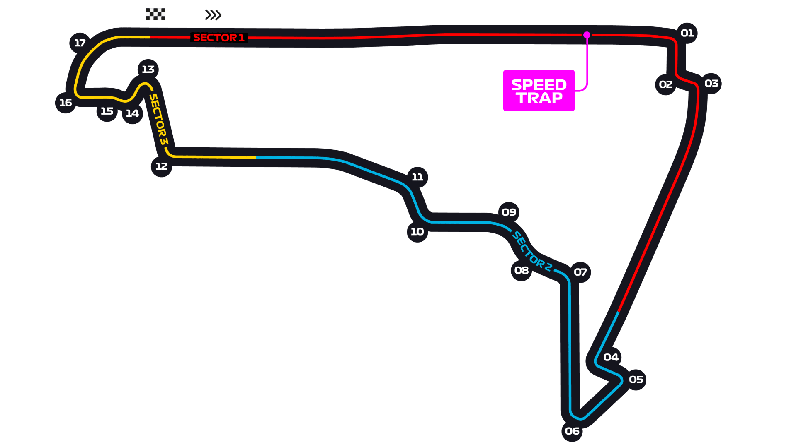

Autódromo Hermanos Rodríguez, Mexico City Circuit Guide
Raced at 2,240 m altitude — the thinnest air of the season. Roughly a quarter less aerodynamic downforce for the same wing angle, so teams run maximum wing and still slide. Cooling is the defining engineering problem of the weekend.
Circuit map

Corners that matter
Turn 1
End of one of the longest full-throttle runs on the calendar; enormous braking zone and the main passing place.
Turns 7–11 — Esses
Quick sequence where the lack of downforce is most obvious.
Turns 12–13 — the Foro Sol stadium
Slow, tight section through the grandstand — visually spectacular, technically a traction test.
Where the passes happen
Good into Turn 1, helped by the very long approach and a big tow effect in thin air. Elsewhere it is harder than the layout suggests.
What it does to the tyres
Low grip and low downforce mean sliding, which drives thermal degradation despite modest cornering loads. Warm-up and braking (also compromised by thin air) are recurring problems.
Worth knowing
Circuit notes
- First Grand Prix: 1963; returned to the calendar in 2015.
- Altitude cuts engine cooling efficiency and brake cooling alike — bodywork is opened up more than anywhere else.
- The Foro Sol stadium section gives the loudest crowd atmosphere of the year.